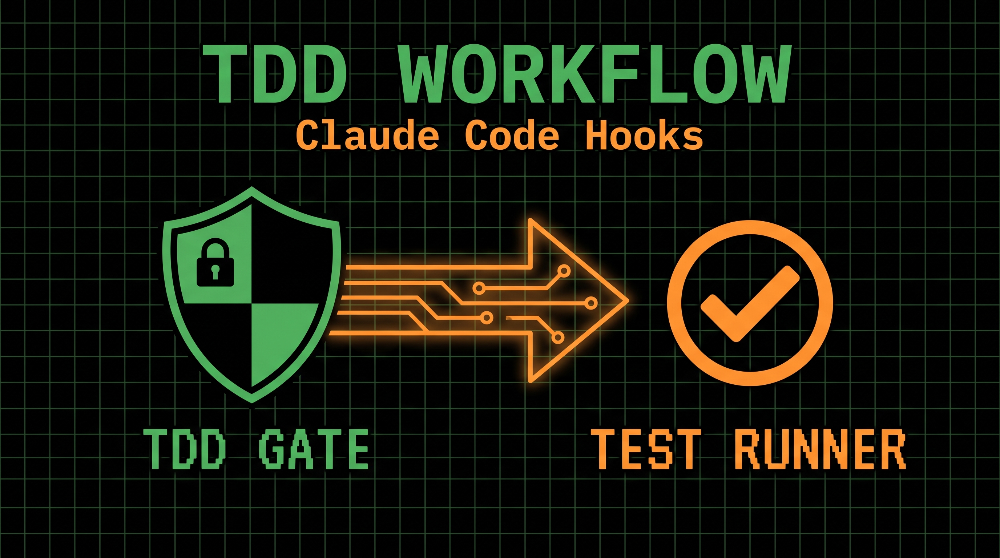

What is the TDD Guardrail workflow?
Claude Code hooks let you intercept tool calls and react to them with your own shell scripts. The TDD Guardrail workflow pairs two hooks from the Claude Code Templates catalog — TDD Gate and Test Runner — so Claude literally cannot skip your test suite. TDD Gate blocks Claude from writing production code until a matching test file exists, and Test Runner automatically executes your tests right after every edit, giving you a closed loop: write the test, get permission to implement, and see the result instantly.
graph LR
A[📝 Claude edits a file] --> B[🛡️ TDD Gate hook]
B --> C[⚙️ Edit allowed]
C --> D[✅ Test Runner hook]
style B fill:#F97316,stroke:#fff,color:#000
style D fill:#F97316,stroke:#fff,color:#000
How the two hooks connect
Claude Code hooks run at specific lifecycle events, and that's exactly what makes this pairing work:
- TDD Gate runs on
PreToolUse(matchingEdit,MultiEdit, andWrite) — it inspects the file Claude is about to touch, and if it's production code (.ts,.py,.go,.rs, etc.) with no corresponding test file nearby, it blocks the edit outright with a denial reason Claude can read and act on. - Test Runner runs on
PostToolUse(matchingEdit) — once an edit is actually allowed through, it detects the project's test tooling (npm/yarn, pytest, RSpec) and runs the relevant suite, surfacing pass/fail feedback immediately. - Both hooks live in the same
hookskey in.claude/settings.json, and multiple hooks matching the same tool run together — so the Gate and the Runner cooperate without any custom glue code.
The result is a real enforcement loop, not just a suggestion: PreToolUse hooks can genuinely deny a tool call (exit code 2 or a permissionDecision: "deny" response), while PostToolUse hooks report on work that already happened. Gate first, Runner after — that ordering is the whole trick.
Key Capabilities
- Write-tests-first enforcement (blocks Edit/MultiEdit/Write on production files without a matching test)
- Automatic test discovery (recognizes
*.test.*,*.spec.*,*_test.*, and framework-specific naming conventions) - Smart skip rules (ignores config, migrations, DTOs, infrastructure files, and test files themselves)
- Instant post-edit verification (runs npm/yarn, pytest, or RSpec automatically after each allowed edit)
- Zero manual toggling (both hooks fire automatically — no slash commands needed)
- Framework-agnostic (works across JS/TS, Python, Go, Rust, Ruby, Java, Kotlin, Swift, Dart, and more for the Gate)
Installation
Install both hooks together using the Claude Code Templates CLI:
npx claude-code-templates@latest --hook quality-gates/tdd-gate --hook testing/test-runnerWhere are the hooks installed?
Each hook registers its config in .claude/settings.json, and the TDD Gate's supporting script lands in .claude/hooks/:
your-project/
├── .claude/
│ ├── settings.json # ← Hook configuration (both hooks)
│ └── hooks/
│ └── tdd-gate.sh # ← TDD Gate enforcement script
├── src/
│ └── components/
├── package.json
└── README.mdHow to Use the Workflow
Once installed, the hooks work silently in the background — you don't need to invoke them. Just develop as usual and let Claude Code enforce the loop:
# Start Claude Code
claude
# Ask Claude to build a feature the normal way
> Add a function to calculate order totals with tax in src/orders.tsIf Claude tries to edit src/orders.ts directly, TDD Gate blocks it and tells Claude to write orders.test.ts first. Once the test file exists, the Gate lets the implementation edit through — and Test Runner immediately executes the suite so you see red or green right away.
Usage Examples
Example 1: New feature, enforced test-first
claude
> Implement a discount calculator in src/pricing/discount.ts. Write the tests first, then the implementationResult: Claude creates discount.test.ts first (TDD Gate has nothing to block there). When it then edits discount.ts, the Gate finds the matching test file and allows it — and Test Runner immediately runs the suite to confirm the new implementation passes.
Example 2: Blocking an untested change
claude
> Quickly patch src/auth/session.py to fix the token expiry bugResult: If no test_session.py or session_test.py exists nearby, TDD Gate denies the edit and explains why, prompting Claude to add a regression test for the bug before touching the fix.
Example 3: Continuous verification during refactors
claude
> Refactor src/utils/formatDate.js to support multiple locales, keeping existing behavior intactResult: Since formatDate.test.js already exists, TDD Gate allows each edit, and Test Runner reruns the suite after every change — catching a locale regression the moment it's introduced instead of at the end of the session.
Official Documentation
For more information about hooks in Claude Code, see the official hooks documentation.
Created by Daniel Ávila — @dani_avila7